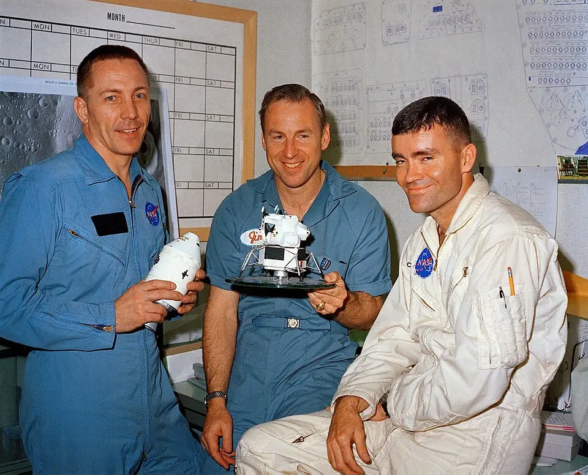
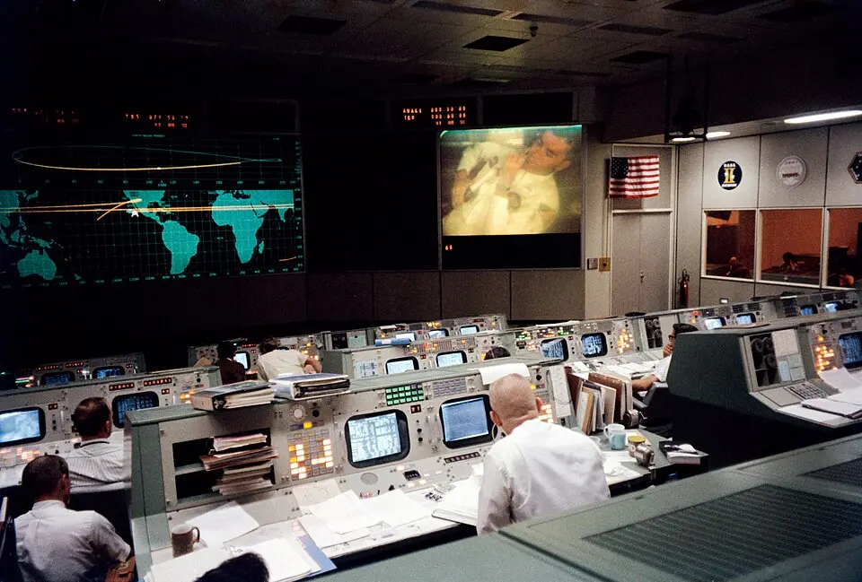
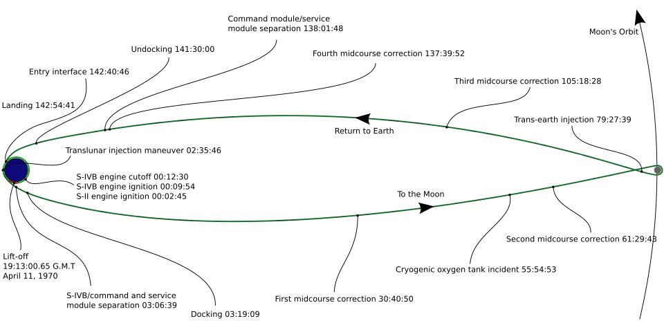
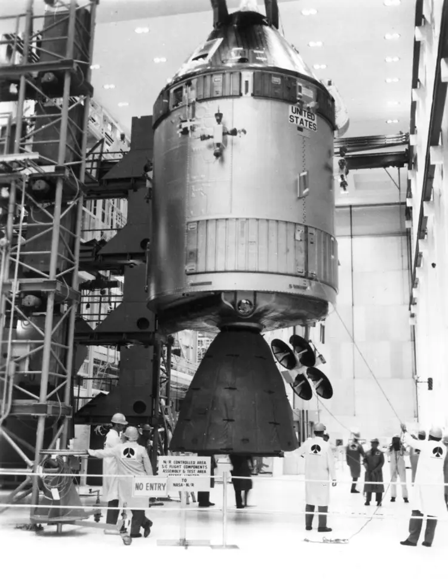

Apollo 13: "Houston, chúng ta gặp sự cố"
Câu nói thật là "Houston, chúng ta đã gặp sự cố ở đây", và người nói đầu tiên là Jack Swigert, phi hành gia chỉ được đưa vào phi hành đoàn ba ngày trước khi phóng.

Gần 56 giờ sau khi rời bệ phóng, tối 13/4/1970 theo giờ miền Đông nước Mỹ, chỉ huy Jim Lovell vừa cất chiếc máy quay sau một buổi phát hình từ không gian. Không đài truyền hình lớn nào chịu phát buổi ấy. Khoảng sáu phút rưỡi sau, ba người trên tàu Apollo 13 nghe một tiếng nổ lớn. Họ đang ở cách Trái Đất khoảng 330.000 km. Bốn ngày sau đó thu hút sự chú ý của công chúng nhiều hơn mọi chuyến bay vũ trụ trước nó, trừ Apollo 11.
Người thay thế phút chót
Bảy ngày trước khi phóng, phi hành gia dự bị Charles Duke bị lây bệnh rubella từ bạn của con trai. Cả phi hành đoàn chính lẫn dự bị đều đã tập chung với ông. Trong năm người, chỉ Ken Mattingly chưa có miễn dịch. NASA không muốn ông phát bệnh giữa đường, nên ba ngày trước khi phóng, Jack Swigert của đội dự bị được đưa vào thay. Phù hiệu nhiệm vụ không phải sửa, vì đây là một trong hai phù hiệu Apollo không ghi tên phi hành gia, cái kia là của Apollo 11.
Apollo 13 phóng lúc 14 giờ 13 phút ngày 11/4/1970 theo giờ miền Đông, với Lovell, Swigert và Fred Haise. Khoang chỉ huy tên Odyssey, khoang đổ bộ Mặt Trăng tên Aquarius. Mục tiêu là vùng Fra Mauro trên Mặt Trăng.
Câu "Houston, we have a problem" mà nhiều người nhớ là câu sai.
Tiếng nổ trong bình oxy số 2


Theo bản ghi liên lạc của NASA, ở giờ thứ 55 phút 55, Swigert nói: "Okay, Houston... we've had a problem here." Người liên lạc ở mặt đất là Jack Lousma đề nghị nhắc lại. Lovell đáp: "Houston, we've had a problem", rồi báo điện áp một đường điện chính bị sụt. Câu "Houston, we have a problem" mà nhiều người nhớ là câu sai. Nó đã có trong một phim truyền hình năm 1974, được chính NASA dùng làm tên một chương trình phát thanh năm 1983, và được phim Apollo 13 của Ron Howard năm 1995 giữ lại vì khán giả đã quen.
Cuộc điều tra sau đó tìm ra một chuỗi lỗi nhỏ trên mặt đất. Bình oxy số 2 có công tắc nhiệt thiết kế cho điện 28 volt, nhưng khi thử ở Trung tâm Vũ trụ Kennedy lại được cấp điện 65 volt. Trước đó, giá đỡ bình từng bị đánh rơi khoảng 5 cm vì quên tháo một con bu lông. Ngày 27/3/1970, khi không xả được oxy theo cách thường, kỹ thuật viên bật bộ sưởi trong bình để làm oxy bay hơi. Lớp cách điện Teflon trên dây quạt khuấy bị hỏng. Khi Swigert bật quạt theo yêu cầu từ mặt đất, dây chập, lửa bùng lên, và áp suất làm vỡ bình.
Chiếc xuồng cứu sinh và cái hộp thư


Khoang đổ bộ Aquarius được thiết kế cho hai người sống hai ngày trên Mặt Trăng. Trung tâm Điều khiển ở Houston phải soạn quy trình mới để nó nuôi ba người trong bốn ngày. Nhiệt độ trong tàu có lúc xuống 3 độ C. Mỗi người chỉ được uống 200 ml nước một ngày. Swigert bị ướt chân khi đổ nước vào túi, và không có giày đi Mặt Trăng vì ông vốn không có lịch bước xuống Mặt Trăng.
Mối nguy lớn nhất là khí CO2. Hộp lọc lithium hydroxide của khoang đổ bộ chỉ đủ cho hai người trong 45 giờ, còn hộp lọc dự trữ của khoang chỉ huy thì khác hình dạng và kích thước, không lắp vừa. Các kỹ sư dưới mặt đất nghĩ ra cách nối chúng bằng bìa nhựa xé từ sách hướng dẫn, băng dính và vài thứ khác trên tàu. Họ gọi thiết bị này là "cái hộp thư". Phi hành gia Joseph Kerwin đọc quy trình lắp ráp qua bộ đàm suốt khoảng một giờ. Swigert và Haise làm theo, và lượng CO2 bắt đầu giảm ngay.
Ngày 14/4, khi bay vòng qua phía sau Mặt Trăng, ba người ở cách Trái Đất 400.171 km. Đó là kỷ lục con người đi xa Trái Đất nhất, giữ suốt 56 năm cho đến chuyến bay vòng Mặt Trăng của Artemis II năm 2026.
Hồ sơ nói gì


Ngày 17/4/1970, khoang Odyssey rơi xuống Nam Thái Bình Dương, phía đông nam Samoa thuộc Mỹ, cách tàu cứu hộ USS Iwo Jima 6,5 km. Thời gian mất liên lạc khi vào khí quyển kéo dài sáu phút thay vì bốn, khiến mặt đất lo tấm chắn nhiệt đã hỏng. Bốn tàu Liên Xô đã hướng về vùng biển đổ bộ để sẵn sàng giúp. Giáo hoàng Phaolô VI cùng 10.000 người cầu nguyện cho phi hành đoàn. Lovell về sau gọi chuyến bay là "một thất bại thành công".
Từ Apollo 14, bình oxy được thiết kế lại với công tắc chịu đúng điện áp, quạt khuấy bị bỏ đi, và tàu được lắp thêm bình oxy thứ ba. Khoang Odyssey nay được trưng bày ở bảo tàng Cosmosphere tại Hutchinson, bang Kansas.
Tờ hóa đơn kéo xe
Sau chuyến bay, hãng Grumman, nhà sản xuất khoang đổ bộ, gửi cho hãng North American Rockwell, nhà sản xuất khoang chỉ huy, một tờ hóa đơn đùa vì đã "kéo" khoang chỉ huy gần hết đường tới Mặt Trăng và về. Hóa đơn tính 400.001 dặm, mỗi dặm 1 đô la, dặm đầu 4 đô la, thêm 536,05 đô la tiền sạc pin, và bốn đêm, mỗi đêm 8 đô la, cho "một khách ở thêm trong phòng" là Swigert. Sau khi trừ 20% chiết khấu thương mại và 2% vì thanh toán đúng hạn, tổng cộng là 312.421,24 đô la. North American từ chối trả.
Apollo 13 không đổ bộ được lên Mặt Trăng; hồ sơ của nó cho thấy một tai nạn bắt đầu từ những lỗi nhỏ dưới mặt đất, và được cứu bằng những giải pháp cũng nhỏ không kém.